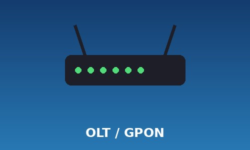

Расскажу об оборудовании, через которое проходит трафик абонента:

Где стоит: узел связи оператора
Задача: раздаёт оптический сигнал на дерево сплиттеров
Скорость PON-порта: 2,5 Гбит/с вниз / 1,25 Гбит/с вверх
Где стоит: подъезд или чердак дома
Задача: подключает квартиры по витой паре (FTTB)
Порты: 24 x 100/1000 Мбит/с + 2 оптических uplink
Тип: одномодовое, G.652D
Затухание: около 0,35 дБ/км на 1310 нм
Совет: ставьте роутер в центре квартиры, а не в шкафу